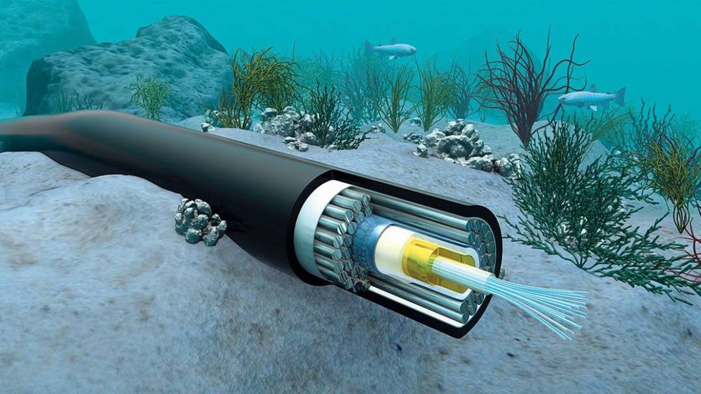

Tecnologia da Informação
Tecnologia da Informação (TI) é um termo utilizado para descrever o conjunto de ferramentas, recursos e processos utilizados para armazenar, processar e transmitir informações de forma eletrônica.
A Tecnologia da Informação e suas aplicações se tornaram imperativas para o dia-a-dia da sociedade. Uma de seus maiores impactos foi, sem dúvidas, na comunicação, reduzindo as distâncias e facilitando processos que outrora demandavam mais tempo e esforço

Tecnologia da comunicação é um conjunto de ferramentas, processos e recursos utilizados para transmitir informações entre pessoas, dispositivos ou sistemas. Essas ferramentas podem incluir dispositivos eletrônicos, redes de comunicação, software, entre outros. A tecnologia da comunicação é o conjunto de ferramentas, processos e recursos utilizados para transmitir informações entre pessoas, dispositivos ou sistemas, sendo fundamental para o funcionamento de muitas empresas e para a sociedade em geral.
Tecnologia da Informação e Comunicação (TIC)
A junção entre Tecnologia da Informação e Comunicação resulta em Tecnologia da Informação e comunicação, que, em suma, é a priorização de infraestruturas de comunicação avançadas, visando uma melhora constante em relação à entrega dos serviços de comunicação, propiciando uma interconectividade melhor.
Dentro das tecnologias eficientes para a construção de uma infraestrutura de comunicação avançada, a principal é a fibra ótica. A fibra ótica é uma tecnologia de transmissão de dados por meio de fibras de vidro ou plástico. Ela oferece alta velocidade e capacidade de transmissão, além de ser mais resistente a interferências eletromagnéticas do que as tecnologias de cabo coaxial ou par trançado.
